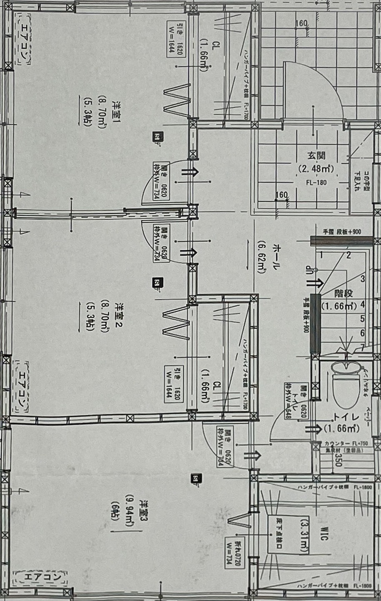

フロアマップ
1F
2F
3F
4F
5F
GPS開始
QR補正
手動補正
GPS設定
中央へ
状態: 初期表示
GPS変換設定
現在設定中のフロア:
1F
左上 緯度
左上を取得
左上 経度
右下 緯度
右下を取得
右下 経度
このフロアに保存
再読込
このフロアを初期値へ戻す
左上 = 画像の左上の実座標
右下 = 画像の右下の実座標
スマホをその場所に持って行き、「左上を取得」「右下を取得」で入力できます。

現在地
QRの例：
floor=1F&nx=0.82&ny=0.30&label=玄関
mode=stairs-up&nx=0.74&ny=0.52&label=階段上り